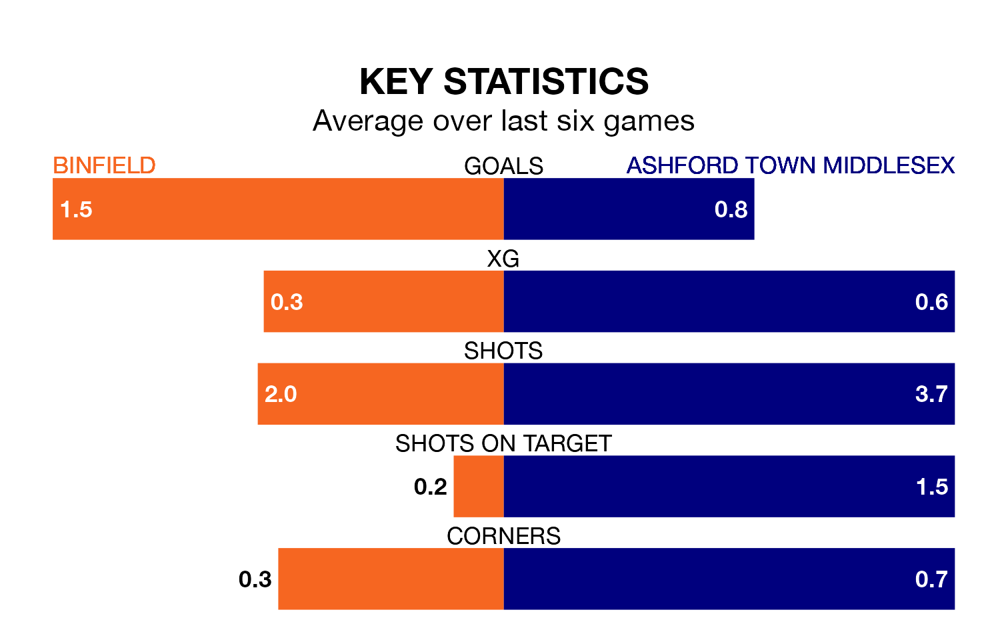

Struggling Binfield face Ashford Town Middlesex on Saturday looking to build on a win in their last league outing.
After securing all three points with a 5-0 victory over Chipstead on March 30, Binfield sit 20th in the Isthmian League Division One South Central.
They travel to play an Ashford Town Middlesex side 18th in the standings, who lost in their last match, 1-0 against Thatcham Town.
Binfield are in disappointing form in the Isthmian League Division One South Central, with one win and two draws from their last six games.
With a win and five losses over that period, Ashford Town Middlesex's form is slightly worse – they have taken three points from 18, compared to the hosts' five.
In the last five years, Binfield and Ashford Town Middlesex have played each other on five occasions. Binfield won three of them, Ashford Town Middlesex one, and they drew once.
On average, Binfield scored 1.4 goals and the Tangerines 1.6 in those matches.
Their last meeting was on August 12, when Ashford Town Middlesex won 6-0 at home.
With 36 goals in 33 games so far this season, the Tangerines are the league's third-lowest scorers with 1.1 goals per game. And they are conceding more than average, letting in 60 goals at a rate of 1.8 per game.
Binfield are also below average scorers, with 1.2 goals per game, compared to a league average of 1.6. They have conceded 3.0 goals per game.
Updated: 16:41 (UTC), 04/04/24